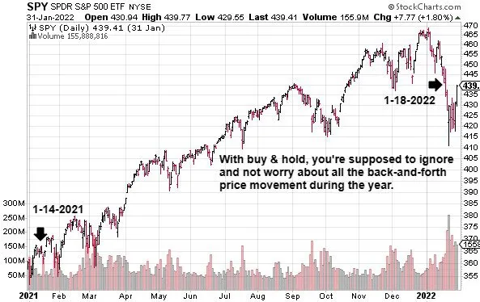
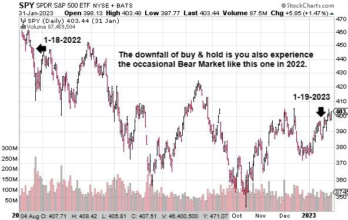

Since using the enhanced buy & hold blueprint, I’ve beaten the market’s
long-term performance and avoided account-crushing losses. However, I
think it would be silly for you to ‘automatically believe me’ just because I
said that’s what I’ve accomplished. That would be naïve.
I know that some trust has to be earned, so in the introduction, I asked you
to temporarily suspend any disbelief long enough for you to try this out
yourself. Said another way, I want you to be an action taker. I’ll provide all
the rules and a step-by-step template, but you must see if this blueprint
works for you.
However, that’s what I want. You ultimately have to decide for yourself.
And you know what? Some don’t decide. They instead choose to be
intellectual snobs (also called critics). They stand on the sidelines, poke
holes in everything, and tell you all the ‘theoretical’ reasons why something
won’t work. They are always too lazy to roll up their sleeves and put in the
work to verify the claims of someone.
Maybe critics fear failure or have been let down so often that they’re bitter.
Who knows? All I know is that they are out there, and their onslaught of
negativity almost discouraged me from sharing this information with you.
I’m glad I ultimately decided to ignore them.
That said, here is my stern warning to intellectual snobs (aka critics). This
book is not for you if you don’t believe you can beat the stock market over
time. It will challenge the dogma you hold to be true, and you’ll fail with
the blueprint because reality is manifested out of your beliefs. Now, let’s
move on to the next group of people who will fail with these concepts,
bigots . .
I’m excited to share my market-beating blueprint with you, but I initially
hesitated to write this book out of fear that my message would be rejected. I
first tried to share what I had discovered with a group of buy & hold
investors I admired. It was a massive failure. They rejected me and my
message, and I became discouraged. Over time, I got over my feelings and
decided this message was too important to keep to myself.
So, what is my message?
It’s simple; I believe you can consistently beat the stock market average.
However, because of this message, I am always in direct conflict with a
group of people I call buy & hold bigots. They are fanatics who tell me it is
impossible to beat the stock market average over the long haul. Yet,
somehow, my enhanced buy & hold portfolio has done it consistently while
taking on less risk.
Pause . . .
What thoughts or emotional reactions did you have to me saying I beat the
market? Did you automatically reject the possibility of truth in that simple
statement? "Yeah, right . . . no way . . . sounds too good to be true.” Only
naïve people would accept such a statement on absolute faith without
evidence. However, a wise person, free of sickening self-limitation, would
merely ask, "How do you beat the market, Travis? Tell me more." If that’s
your response, this book is for you, but first . . .
I must acknowledge the guy who inspired me to share my investing
blueprint with the world. His name is Chris M., and I met him at a financial
blogger conference. Chris is loosely part of a small but growing movement
called F.I.R.E., which stands for Financial Independence, Retire Early. I
associate with the movement, but I’m not welcome in their club, even
though I achieved financial freedom when I was 34. Maybe I am welcome,
and I’m just being a highly sensitive diva. Yeah, that’s most likely it . . . and
my wife agrees. So let me rephrase that. I ‘feel’ unwelcome because most
are buy & hold bigots.
Bigots are people who are intolerant toward those holding different
opinions. They tend to chastise anyone who doesn’t believe what they
believe. These buy & hold bigots also have nothing good to say about
actively trading the stock market. They usually, not always, but typically
stereotype active investors like me and are closed-minded to what I have to
teach. They say things like . . .
All the above bullet points are firmly held beliefs that are stated as facts. In
life, you can find many examples that prove these statements false. The last
bullet point exemplifies the dangers of being a bigot. You look stupid when
you speak with authority, but you are wrong.
Bigotry = Ignorance!
I trade options, and the most profitable strategy I have ever discovered, I
learned from Warren Buffett. That’s right, the “investing legend” uses
options via his company Berkshire Hathaway Inc. (Cfa, 2009). It’s hard for
anyone to convince me that Buffett hates options when he has used them to
earn billions in profit. So if you’re a buy & hold bigot who thinks Mr.
Buffett hates options, take the time to read his shareholder letters where he
outlines the options strategy he occasionally uses.
Moving on . . .
Buy & hold fanatics proudly brag about their ‘average returns’ while
vilifying active investors like me. When the stock market crashes, and 40–
50% of their money evaporates, they rally together and say, "This is normal.
The market runs in cycles. Just keep investing.” My translation: bend over
and take the loss because this is normal. If getting screwed financially and
watching my account massively drop in value is normal, then, no thanks; I
want a new normal!
I’m not the only one. Most students come my way because they are fed up
with that investing style. Watching 50% of your money disappear while you
helplessly sit there and watch it happen is terrifying. It’s even worse for
retirees. A loss like that often causes them to reenter the corporate world
when they should be traveling the world and enjoying retirement.
Buy & hold is fantastic until you experience the flaws firsthand. So I
understand why people want to learn how to trade the stock market actively.
I get it! However, before we move on to active trading, a quick investing
example to defend buy & hold.
Please note: I will use figures from my broker’s historical pricing feature or
actual transactions I placed in my account for any examples I provide in the
book. If using historical data, I use the prices listed at the end of the trading
day. Also, I round the figures to the nearest dollar in many examples. That
said, let’s cover an example of buy & hold.

Figure 2 Stock chart of SPY, Source: StockCharts.com
The start date is January 14, 2021. You buy 400 shares of SPDR S&P 500
ETF Trust (stock symbol: SPY, often pronounced as S.P.Y. or simply spy).
It’s an exchange-traded fund (ETF) that tracks the S&P 500. ETFs will be
explained in a later chapter, but for now, know the price of the ETF at the
time of purchase was $378.46. So the total investment was $151,384 for
400 shares. Fast forward to January 18, 2022, and SPY has risen in price to
$456.49.
That’s a gain of $31,212, or 20.6%, on your 400 shares. That’s
outstanding! And what did you have to do to earn that profit? Absolutely
nothing! The beauty of buy & hold is that you benefit from the long-term
trend of American capitalism. You put your money into the stock market, sit
back, and earn passive income with little to no effort.
Now let’s move forward another year to January 19, 2023. SPY is trading at
$388.64 a share. You lost $27,140, or -14.9%. You have lost most of last
year’s profit and are essentially back to where you started in 2021. Two
years of your life have passed, and you’ve made a small profit overall.

Figure 3 Stock chart of SPY during the 2022 Bear Market, Source: StockCharts.com
The previous profit and loss example illustrates how investing can sometimes be an emotional and financial roller coaster. Remember that this type of movement is typical, and it’s the price we pay to get rich in the stock market. Also, passive income in the stock market works both ways. If you make money passively, you can also lose it passively. Making money with little to no effort on your part is fun. However, losing it from being passive makes you feel completely helpless.
Before we move on, let me be crystal clear. Yes, buy & hold works. There is
an overwhelming amount of evidence proving that buy & hold works. I
don’t dispute that. However, what angers me is that financial experts push it
down people’s throats without empathy for the financial and emotional
destruction it causes when things go wrong. Especially for retirees who
count on that money lasting for the rest of their lives.
Watching 40–50% of my money disappear and then doing nothing about it
is reckless. That’s why I dislike traditional buy & hold. It does not
adequately protect you during market crashes. So, if that’s the problem,
what is my proposed solution?
I’ll get to my current solution in a later chapter, but the first solution I tried
was actively trading the stock market. With active trading, you control your
gains and losses more. And as you’ll see in an upcoming example, you can
often make as much, or more money, than buy & hold while risking less
money. Sadly though, the benefits of actively managing your money can
also make you a bigot.
Bigotry is also present in the active trading community. I know because I
used to be one. I thought buy & hold investors were stupid to settle for 7–
9% a year when I was earning 15–30% by actively trading the stock market.
I was biased because of my real-world experience with active trading.
Let me show an example of why I was such a bigot, and I will explain the
mechanics of the investment that produced this type of return in a later
chapter. We will use the same start and end dates as earlier, January 14,
2021 to January 18, 2022. However, I will buy six call option contracts
instead of stock shares. Again, I’ll explain the mechanics of options in a
later chapter, but for now, follow the big picture. Options are an investment
tool that allows you to benefit from stock price movement without owning
the stock. Moving on . . .
I’ll start with the same $151,384 I have to invest, but this time, I’ll only use
roughly 20% of it to buy call options. On January 14, 2021, I purchased six
December 2023, 380 call options @ $4,877 per contract, a total investment
of $29,262. Fast forward to January 18, 2022, and I was able to sell those
calls for $10,429 per contract (a $5,552 profit per contract). Since I bought
six contracts, that’s a total gain of $33,312 or 113.8%.
Now let’s compare the two approaches . . .
With options, I had a bigger profit, a higher percent return, and I
risked less of my money! I grew my overall account by 22% while leaving
most of it safely in cash, protected from a market crash. Can you see how
fifteen-plus years of performance like that would make me biased? As you
can see, I can often beat the market’s average return with active trading.
Right now, some critic of options is ready to send me hate mail about how
this example is misleading and doesn’t talk about losses. If so, chill out,
crabby pants! I’ll get to the risk of losing money with options next. I’m
merely showing how my experience with options made me an active trading
bigot.
That said, let’s talk about losing money. Yes, the call option return of
113.8% was incredible, but don’t get so excited that you forget the outsized
return also works in reverse. It’s best never to forget that. How would you
feel if you had lost 100% of your investment? Because that is what almost
happened the year after this significant gain. If you buy a new set of call
options and fast forward another year to January 19, 2023, the next round of
calls loses $26,700. This is similar to the buy & hold loss of $27,140 during
the same period. However, the 67.9% percent loss on the options is
stomach-churning.
Too many investors are so enticed by the big profits that options deliver that
they get sloppy, risk too much money, and eventually lose it all. I’ve seen it
happen too many times in my twenty-plus-year career. Heck, it happened to
me a few times early in my journey. It almost happened to me again in the
bear market of 2022, but I was smart enough to correct my errors before
they caused too much financial damage. This illustrates that sometimes I
make mistakes, or often life gets in the way of active trading, and I fail to
beat the performance of a simple buy & hold approach.
In summary, both approaches have pros and cons. In my experience,
integrating the best of both worlds is the best solution. And that is precisely
what we will discuss in the next chapter.